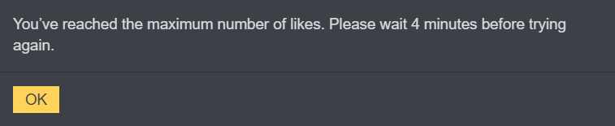

like in fact I even tr wazza because with that claim there’s no way he could live past like night fucking 3 as scum
he’d prolly be forced to self-resolve by then

like in fact I even tr wazza because with that claim there’s no way he could live past like night fucking 3 as scum
he’d prolly be forced to self-resolve by then
Alice waited until after I went to sleep to unleash her thoughts on my read list despite her being active near the end when I was still on. I will keep that in consideration with this slot in the future.
Not having Black and White opinions D1 isn’t scummy. And I’ve given reasoning, but I will do so again if it helps first Alice clear her head, or get her to slip up as scum.
Alice also claimed my theories earlier of possible worlds were TMI and scumread me right away for it, while in the midst of the aftermath of her trantrum; then i was suspicious for parking a vote on her. Her logic is not following through with her superficial intent and it’s as noticeable as a sore thumb.
Day 1 claims mean nothing to me; however, you thinking this is interesting, would like for you to explain more on how I value D1 claims moreso than other reads.
I had her as a townlean for her AtE, but her illogical follow-up does not fit my original idea of what V!Alice would do. For example, the lack of scrutiny on Magnus, the consistent townread on PKR despite his absence for that whole important series of discussions, and her flip floppy attitude on Wazza.
Actually, if you were to pay attention, this is my scummiest read, as I always scumlean wazza early, even if as a meme or serious.
I do not care if you claimed Tracker, you are not mech-confirmed. The other TI wouldn’t CC you anyway if they have any drop of rationality in them.
I have clearly stated before Italy isn’t confirmed by any means. Italy is how Italy be right now, on D1. NAI. You want me to flip a coin and decide a read by that @Alice?
Yes, but position of alignment is not the only thing you analyze. I intentionally put that she was originally townread, because the progression of her becoming scummier is important. If she was not originally townread, she would be scumleaned right now. That is important info for people who didn’t townread her early plays like I did.
How so?
You just look at that they claimed a role, then ignored all other context.
Indeed, multiple people have katze as null, and are unsure/sporatic with Wazza. This is a usual pattern afaik, but I see no point in emphasizing it here.
It is clear why you would be a Buss-partner candidate if Cloned flips scum. Also, you manipulated the language here. “Pre-Flipping” is not the same as setting conditional theories. If/then statements. What this means is that if cloned=scum, he would likely be bussed. And you would be a candidate for re-eval on that. Ofc you wouldn’t like that read. It casts suspicion on you. But it is necessary.
I’d imagine you haven’t read any of my previous posts about Blue.
Sog was originally a scumlean, but they have shown social ineptitude and admitted to English not being a first language. You can clearly tell in my ISO of SogMan what exactly I found that prods my suspicion of him, and what tells me he is socially unaware. Read it, Alice.
They have both been inactive during a crucial series of discussions. So yes, PKR is a reasonable re-eval slot.
I expanded on Universal in the thread, again you are separating my read-list in that moment from my actual overall thread presence; stop looking at this game’s posts individually without regarding others that are related.
Why should I?
Okay, this has happened so many times while I read this thread, that it is getting on my nerves. Call this game evol mafia from now on please.
In conclusion: Waiting until someone goes to sleep then picking their read-list apart without consideration to previous context is…cringe. Especially for a veteran player.
So, Italy and Wazza are 2 RT claims?
Are there any others?
no sir
Got it, so we’ve got either another PR RT unclaimed atm, which seems fine or another citizen RT.
that, or a PR claim is lying
In which that increases the Cit RT slots.
If I had to follow my gut, then as I said earlier on, I think Waz is fake.
This whole vigilante thing actually supports that.
Also, I assume Alice is being voted due to the old thunderdome?
Alice did rescind the Vet claim, did she not?
We need to consider why as scum that she claims a unique class.
Coven would only do it if to them it was their weakest member power.
NB just wouldn’t, at all, unless Shade or a high risk Double.
NE executioner doesn’t claim a unique role unless they’re trying to bait people to vote their target. But Phantom might.
NK loses outright if they get lynched so I really do not think that gambit is ever taken from there.
alice currently has no votes
I’ve just woken up… I think these were thoughts I meant to say before, had noted and then forgot to send so yay.
It’s giving me kinda bad vibes
like she did this thing and baited out the vet claim (and caused a chain reaction of massclaim) and has faced no real drawbacks
but it’s not my main focus rn
I just don’t see how she would expect a high level of play while also constantly shitting on the site
even I couldn’t pull off whatever she was going for if she is villa and I don’t think anyone else here could especially in such a setup
like if there is no vet CC’s she’s not getting invested at the very least
and if there are vet CC’s a vet gets baited out and then boom
I just
im not sure why suddenly she’s a mass-townlean
Her AtE was very genuine but that is meaning less and less as time goes on
how many times do I have to say that alice shouldn’t be cleared off of being angry
she’s just… an angry person. And it wouldn’t be hard at all to shift that anger slightly to “i’ve been caught” anger to “marshal sucks” anger
idk, I think some people are also afraid to challenge her because of how…you know, she can get
I just feel like there’s a wave of evidence against her but people still townlean her with kind of weak reasons
I like my vote where it is because if N doesn’t do shit he should just fucking die
but like
it’s a little weird™

kms rn